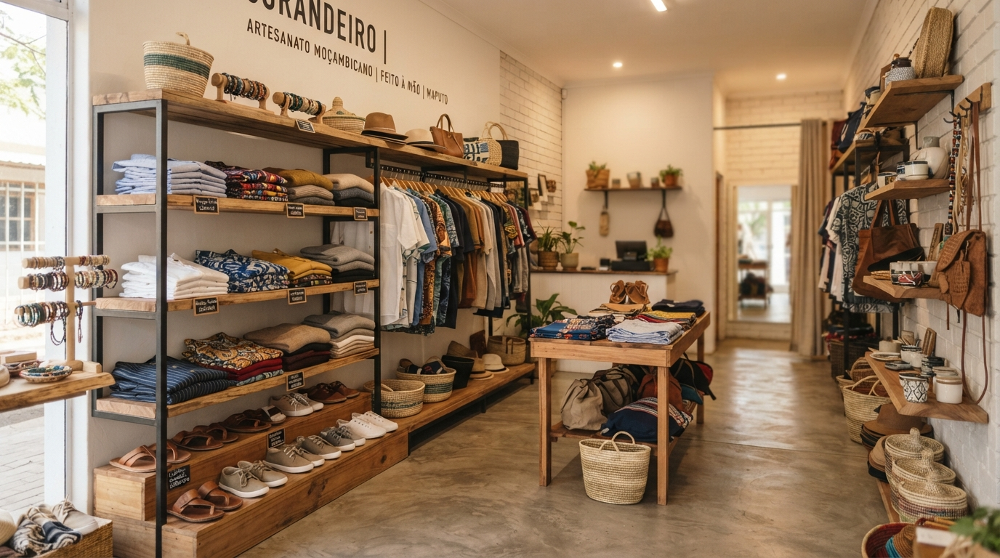

Passo a passo, sem pressa e no seu ritmo.
Presença — Ser Encontrado
O que é: Registar o seu negócio no Google Maps / Perfil de Empresa, definindo localização precisa, dias e horas exatas de atendimento ao cliente.
Impacto prático: Quem procura artesanato, refeições caseiras, tecidos capulana ou oficinas na sua zona consegue constatar de imediato que você existe, onde fica a sua banca ou loja e se está aberto agora.

Produtos — Mostrar com Clareza
O que é: Produzir fotos nítidas aproveitando a rica luz natural da manhã ou tarde com o seu próprio smartphone e disponibilizar descrições simples com preços transparentes.
Dica prática moçambicana: Criar um catálogo integrado no WhatsApp Business ou um link simples que qualquer cliente pode abrir sem gastar pacotes pesados de internet.
Atender, fidelizar e colher resultados
A relação comercial ganha força no momento do contacto e transforma clientes ocasionais em parceiros frequentes.
Comunicação — Responder e Vender
O que é: Mensagens automáticas de boas-vindas, rapidez no atendimento personalizado e opções de pagamento móvel integradas (M-Pesa, e-Mola).
O benefício: Redução drástica na perda de clientes que perguntam "qual o preço?" e desistem por falta de resposta rápida.
Divulgação — Criar Hábito e Alcance
O que é: Publicações regulares e genuínas mostrando os bastidores do trabalho, novas chegadas de estoque e incentivo de recomendações entre clientes fiéis.
O benefício: Criação de autoridade e boca a boca digital direto no bairro e nas cidades vizinhas.
Crescimento — Avaliar e Expandir
O que é: Compreender com clareza quais produtos têm maior saída, analisar feedbacks de compradores e organizar pequenas campanhas promocionais periódicas.
O benefício: Investimento de recursos exatamente onde há retorno garantido para a sustentabilidade da família.
Aprender em conjunto fortalece o comércio de Moçambique.
Nas nossas sessões práticas em Maputo, Beira e Nampula, sentamo-nos à mesma mesa. O dono de uma marcenaria troca experiências com quem confeciona capulanas ou gere uma mercearia familiar.
Ferramentas gratuitas no seu telemóvel
Soluções leves pensadas para gastar o mínimo de bateria e funcionar até em conexões lentas de rede móvel.
WhatsApp Business
Catálogo de produtos integrado, respostas prontas para clientes frequentes e etiqueta para pedidos pendentes.
Google Meu Negócio
Coloque o nome da sua oficina ou barraca na busca do Google e permita que motoristas e clientes naveguem até si.
M-Pesa & e-Mola
Facilidade essencial de pagamento imediato para evitar desistências por falta de troco ou dinheiro físico em mão.
Canva Básico
Modelos simples para criar cartazes de promoções e preços legíveis sem necessitar de designers gráficos caros.
Em que etapa o seu negócio está hoje?
Responda a 3 perguntas simples para descobrir por qual ação prática deve começar hoje mesmo.
O seu negócio pode chegar mais longe.
Descubra como as ferramentas digitais podem ajudar a organizar o seu negócio, alcançar mais clientes e criar novas oportunidades de crescimento.